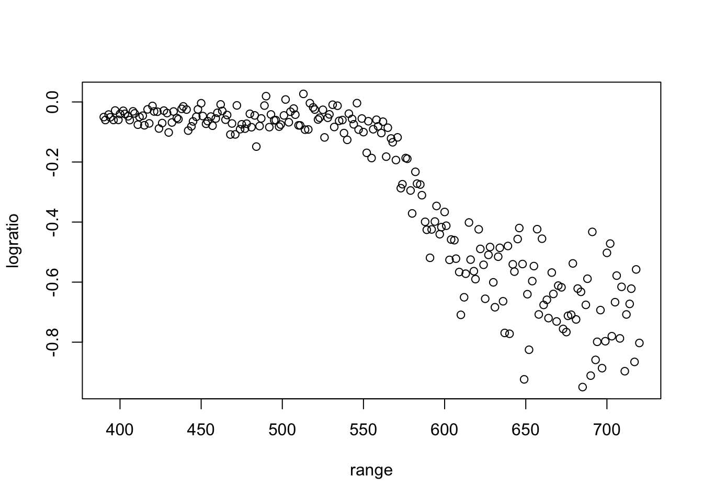
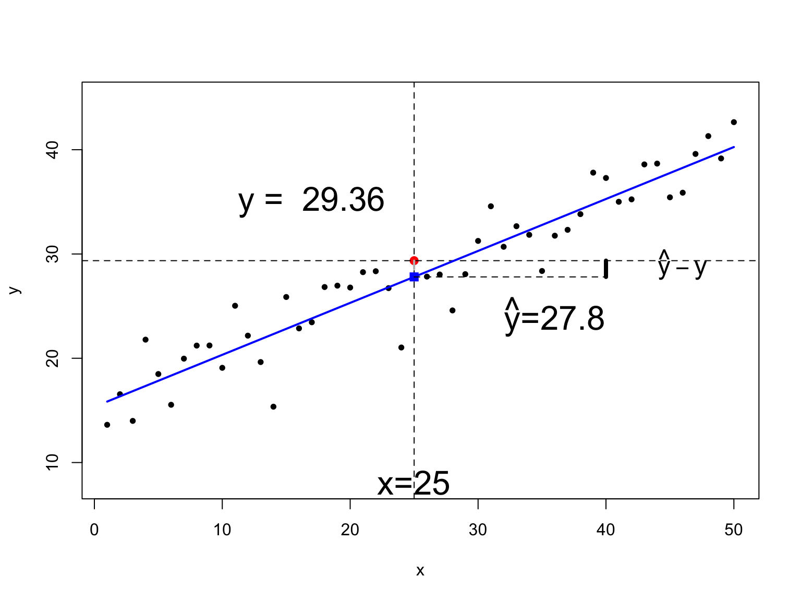
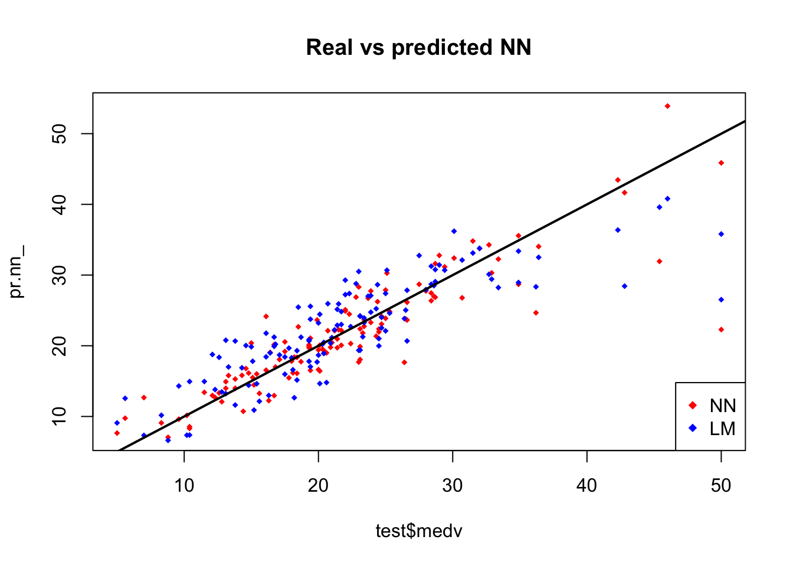
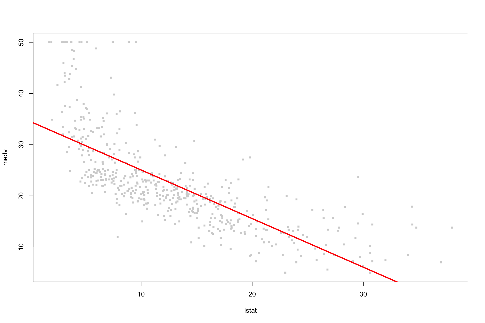
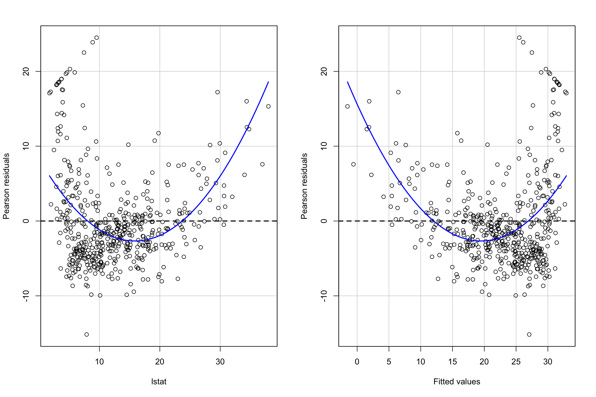
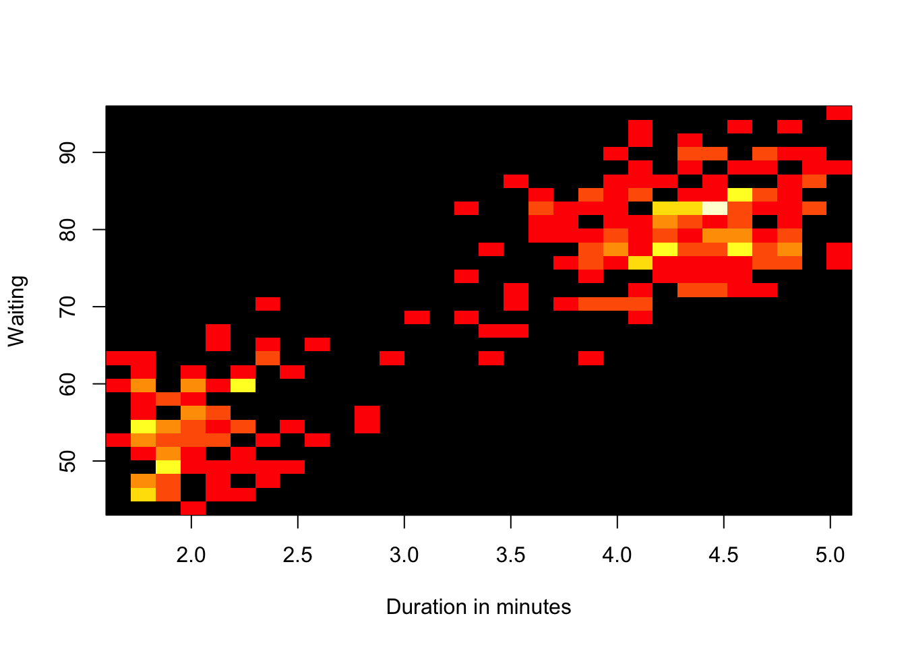

3 Análisis de datos básico en R
3.1 Gráficos sencillos
- Scatterplot
attach(mtcars)
plot(wt, mpg, main="Scatterplot Example",
xlab="Car Weight ", ylab="Miles Per Gallon ", pch=19) 
- Matriz scatterplot
pairs(~mpg+disp+drat+wt,data=mtcars,
main="Simple Scatterplot Matrix")
- Barplot o diagrama de barras
tab <- table(mtcars[,c("cyl")])
barplot(tab)
- Piechart o diagrama de tarta
pie(tab)
Ejercicio:
- El
data.frameVADeathscontiene las tasas de mortalidad por cada 1000 habitantes en Virginia (EEUU) en 1940
- Las tasas de mortalidad se miden cada 1000 habitantes por año. Se encuentran clasificadas por grupo de edad (filas) y grupo de población (columnas). Los grupos de edad son: 50-54, 55-59, 60-64, 65-69, 70-74 y los grupos de población:
Rural/Male,Rural/Female,Urban/MaleandUrban/Female.
data(VADeaths)
VADeaths## Rural Male Rural Female Urban Male Urban Female
## 50-54 11.7 8.7 15.4 8.4
## 55-59 18.1 11.7 24.3 13.6
## 60-64 26.9 20.3 37.0 19.3
## 65-69 41.0 30.9 54.6 35.1
## 70-74 66.0 54.3 71.1 50.0Calcula la media para cada grupo de edad.
- Result:
## 50-54 55-59 60-64 65-69 70-74
## 11.050 16.925 25.875 40.400 60.350Calcula la media para cada grupo de población.
- Resultado:
## Rural Male Rural Female Urban Male Urban Female
## 32.74 25.18 40.48 25.28- El
data.framerainforestcontiene diferentes variables despecies
library(DAAG)## Loading required package: latticerainforest
?rainforest
names(rainforest)Crear una tabla de conteos para cada
speciesy realiza un gráfico descriptivo.- Resultado:
##
## Acacia mabellae C. fraseri Acmena smithii B. myrtifolia
## 16 12 26 11
- El
data.frameAcmenaest? creado a partir derainforestmediante la funciónsubset.
- Realiza un gráfico que relacione la biomasa de la madera (
wood) y el di?metro a la altura del pecho (dbh). Utiliza tambi?n la escala logarítmica.
Acmena <- subset(rainforest, species == "Acmena smithii")
- Calcula un histograma de la variable
dbhmediante la funciónhist

Crea un vector de n?meros enteros positivos impares the longitud 100 y calcula los valores entre 60 y 80.
- Result:
## [1] 61 63 65 67 69 71 73 75 77 793.2 Scatterplots
library(MASS)
data("mammals")
?mammals
head(mammals)## body brain
## Arctic fox 3.385 44.5
## Owl monkey 0.480 15.5
## Mountain beaver 1.350 8.1
## Cow 465.000 423.0
## Grey wolf 36.330 119.5
## Goat 27.660 115.0attach(mammals)
species <- row.names(mammals)
x <- body
y <- brainlibrary(calibrate)
# scatterplot
plot(x,y, xlab = "body weight in kgr", ylab = "brain weight in gr",
main="Body vs Brain weight \n for 62 Species of Land Mammals",xlim=c(0,8500))
textxy(x,y,labs=species,col = "blue",cex=0.85) 
Identificar un punto en el scatterplot
identify(x,y,species)En escala logarítmica
plot(log(x),log(y), xlab = "log body weight in kgr", ylab = "log brain weight in gr",
main="log Body vs log Brain weight \n for 62 Species of Land Mammals")
textxy(log(x),log(y),labs=species,col = "blue",cex=0.85) 
Identificar un punto en la escala logarítmica
identify(log(x),log(y),species)3.3 Más opciones gráficas
Varios conjuntos de datos en un sólo gráfico
Una vez realizado un plot, el comando points permite añadir nuevas observaciones.
set.seed(1234)
x <- rnorm(10,sd=5,mean=20)
y <- 2.5*x - 1.0 + rnorm(10,sd=9,mean=0)
cor(x,y)## [1] 0.7512194 plot(x,y,xlab="Independent",ylab="Dependent",main="Random plot")
x1 <- runif(8,15,25)
y1 <- 2.5*x1 - 1.0 + runif(8,-6,6)
points(x1,y1,col=2)
con la leyenda
set.seed(1234)
x2 <- runif(8,15,25)
y2 <- 2.5*x2 - 1.0 + runif(8,-6,6)
plot(x,y,xlab="Independent",ylab="Dependent",main="Random plot")
points(x1,y1,col=2,pch=3)
points(x2,y2,col=4,pch=5)
legend("topleft",c("Original","one","two"),col=c(1,2,4),pch=c(1,3,5))
Varios gráficos en un sola imagen
set.seed(1234)
par(mfrow=c(2,3))
boxplot(rnorm(100),main="first plot")
boxplot(rgamma(100,2),main="second plot", horizontal=TRUE,col="bisque")
plot(rnorm(100),xlab="third plot",
ylab="y-label",main="x-label")
hist(rnorm(100),main="fourth plot",col="lightgrey")
hist(rexp(100),main="fifth plot",col="blue")
plot(rnorm(100),rexp(100),main="sixth plot")
Relaciones entre variables
uData <- rnorm(20)
vData <- rnorm(20,mean=5)
wData <- uData + 2*vData + rnorm(20,sd=0.5)
xData <- -2*uData+rnorm(20,sd=0.1)
yData <- 3*vData+rnorm(20,sd=2.5)
d <- data.frame(u=uData,v=vData,w=wData,x=xData,y=yData)
pairs(d)
Gráfico de correlaciones
La función corrplot de la librer?a corrplot permite visualizar una matriz de correlaciones calculada mediante la función cor
library(corrplot)## corrplot 0.84 loadedM <- cor(d)
corrplot(M, method="circle",type="upper")
Gráficos de superficies: image, contour y persp
x <- seq(0,2*pi,by=pi/50)
y <- x
xg <- (x*0+1) %*% t(y)
yg <- (x) %*% t(y*0+1)
f <- sin(xg*yg)
par(mfrow=c(2,2))
image(x,y,f)
contour(x,y,f)
contour(x,y,f,nlevels=4)
image(x,y,f,col=grey.colors(100))
contour(x,y,f,nlevels=4,add=TRUE,col="red")
Podemos utilizar la función persp
persp(x,y,f,theta=-30,phi=55,col="lightgrey",shade=.01)
o representar im?genes
library(fields)
data(lennon)
image(lennon,col=grey(seq(0,1,l=256)))
3.4 Tablas de clasificación cruzada o de contigencia
library(MASS)
data(quine)
head(quine)## Eth Sex Age Lrn Days
## 1 A M F0 SL 2
## 2 A M F0 SL 11
## 3 A M F0 SL 14
## 4 A M F0 AL 5
## 5 A M F0 AL 5
## 6 A M F0 AL 13attach(quine)
table(Sex)## Sex
## F M
## 80 66table(Sex,Age)## Age
## Sex F0 F1 F2 F3
## F 10 32 19 19
## M 17 14 21 14# or xtabs
xtabs(~Sex+Age,data=quine)## Age
## Sex F0 F1 F2 F3
## F 10 32 19 19
## M 17 14 21 14xtabs(~Sex+Age+Eth,data=quine)## , , Eth = A
##
## Age
## Sex F0 F1 F2 F3
## F 5 15 9 9
## M 8 5 11 7
##
## , , Eth = N
##
## Age
## Sex F0 F1 F2 F3
## F 5 17 10 10
## M 9 9 10 7Cálculos sobre tablas de contigencia
tapply(Days,Age,mean)## F0 F1 F2 F3
## 14.85185 11.15217 21.05000 19.60606tapply(Days,list(Sex,Age),mean)## F0 F1 F2 F3
## F 18.70000 12.96875 18.42105 14.00000
## M 12.58824 7.00000 23.42857 27.21429tapply(Days,list(Sex,Age),function(x) sqrt(var(x)/length(x)))## F0 F1 F2 F3
## F 4.208589 2.329892 5.299959 2.940939
## M 3.768151 1.418093 3.766122 4.5695823.5 Datos cualitativos
Supongamos unos datos cualquiera de las variables treatment y improvement de pacientes a una enfermedad determinada.
treatment <- factor(rep(c(1, 2), c(43, 41)), levels = c(1, 2),
labels = c("placebo", "treated"))
improved <- factor(rep(c(1, 2, 3, 1, 2, 3), c(29, 7, 7, 13, 7, 21)),
levels = c(1, 2, 3),
labels = c("none", "some", "marked"))Tabla de contigencia
xtabs(~treatment+improved)## improved
## treatment none some marked
## placebo 29 7 7
## treated 13 7 21De manera gráfica,
spineplot(improved ~ treatment)
El conjunto de datos de R, UCBAdmissionscontiene los datos agregadps de los solicitantes a universidad de Berkeley a los seis departamentos más grandes en 1973 clasificados por sexo y admisión.
data("UCBAdmissions")
?UCBAdmissions
apply(UCBAdmissions, c(2,1), sum)## Admit
## Gender Admitted Rejected
## Male 1198 1493
## Female 557 1278prop.table(apply(UCBAdmissions, c(2,1), sum))## Admit
## Gender Admitted Rejected
## Male 0.2646929 0.3298719
## Female 0.1230667 0.2823685ftable(UCBAdmissions)## Dept A B C D E F
## Admit Gender
## Admitted Male 512 353 120 138 53 22
## Female 89 17 202 131 94 24
## Rejected Male 313 207 205 279 138 351
## Female 19 8 391 244 299 317Con ftable podemos presentar la información con mayor claridad
ftable(round(prop.table(UCBAdmissions), 3),
row.vars="Dept", col.vars = c("Gender", "Admit"))## Gender Male Female
## Admit Admitted Rejected Admitted Rejected
## Dept
## A 0.113 0.069 0.020 0.004
## B 0.078 0.046 0.004 0.002
## C 0.027 0.045 0.045 0.086
## D 0.030 0.062 0.029 0.054
## E 0.012 0.030 0.021 0.066
## F 0.005 0.078 0.005 0.070Resulta más intereseante mostrar la información por género Gender y Dept combinados (dimensiones 2 y 3 del array). Nótese que las tasas de admisión por male y female son más o menos similares en todos los departamentos, excepto en “A”, donde las tasas de las mujeres es mayor.
# prop.table(UCBAdmissions, c(2,3))
ftable(round(prop.table(UCBAdmissions, c(2,3)), 2),
row.vars="Dept", col.vars = c("Gender", "Admit"))## Gender Male Female
## Admit Admitted Rejected Admitted Rejected
## Dept
## A 0.62 0.38 0.82 0.18
## B 0.63 0.37 0.68 0.32
## C 0.37 0.63 0.34 0.66
## D 0.33 0.67 0.35 0.65
## E 0.28 0.72 0.24 0.76
## F 0.06 0.94 0.07 0.93## Data aggregated over departments
apply(UCBAdmissions, c(1, 2), sum)## Gender
## Admit Male Female
## Admitted 1198 557
## Rejected 1493 1278Gráficamente
spineplot(margin.table(UCBAdmissions, c(3, 2)),
main = "Applications at UCB")spineplot(margin.table(UCBAdmissions, c(3, 1)),
main = "Admissions at UCB")Estos datos ilustran la denominada paradoja de Simpson. Este hecho ha sido analizado como un posible caso de discriminación por sexo en las tasas de admisión en Berkeley. De los 2691 hombres que solicitaron se admitidos, 1198 (44.5%) fueron admitidos, comparado con las 1835 mujeres de las cuales tan s?lo 557 (30.4%) fueron admitidas. Se podr?a por tanto concluir que los hombres tienes tasas de admisión mayores que las mujeres. Wikipedia: Gender Bias UC Berkeley.
Otro ejemplo de la Paradoja de Simpson:

3.6 Datos cuantitativos
head(faithful)## eruptions waiting
## 1 3.600 79
## 2 1.800 54
## 3 3.333 74
## 4 2.283 62
## 5 4.533 85
## 6 2.883 55Consideremos los datos del geyser Old Faithful en el parque nacional de Yellowstone, EEUU.
plot(faithful)3.6.1 Distribuciones de frecuencias
Vamos a utilizar el conjunto de datos faithful, para ilustrar el concepto de distribuci?n de frecuencias que consistir? en crear una series de categor?as o intervalos, en los que contaremos el n?mero de observaciones en cada categor?a.
duration <- faithful$eruptions
range(duration)## [1] 1.6 5.1Crearemos los sub-intervalos entre [1.6, 5.1] y la secuencia { 1.5, 2.0, 2.5, ... }.
breaks <- seq(1.5,5.5,by=0.5)
breaks## [1] 1.5 2.0 2.5 3.0 3.5 4.0 4.5 5.0 5.5La función cut nos permite divider el rango en los intervalos que especifiquemos, con el argumento right=FALSE, consideramos el intervalo cerrado por la derecha.
duration.cut = cut(duration, breaks, right=FALSE) Con table generamos las frecuencias
duration.freq = table(duration.cut)
duration.freq## duration.cut
## [1.5,2) [2,2.5) [2.5,3) [3,3.5) [3.5,4) [4,4.5) [4.5,5) [5,5.5)
## 51 41 5 7 30 73 61 4Con hist podemos realizarlo de manera autom?tica:
freq <- hist(duration)
freq## $breaks
## [1] 1.5 2.0 2.5 3.0 3.5 4.0 4.5 5.0 5.5
##
## $counts
## [1] 55 37 5 9 34 75 54 3
##
## $density
## [1] 0.40441176 0.27205882 0.03676471 0.06617647 0.25000000 0.55147059
## [7] 0.39705882 0.02205882
##
## $mids
## [1] 1.75 2.25 2.75 3.25 3.75 4.25 4.75 5.25
##
## $xname
## [1] "duration"
##
## $equidist
## [1] TRUE
##
## attr(,"class")
## [1] "histogram"freq <- hist(duration,breaks = breaks)hist(duration,50)Estimación de densidad construye una estimación dada una distribucion de probabilidad para una muestra dada.
require(graphics)
d <- density(faithful$eruptions)
d##
## Call:
## density.default(x = faithful$eruptions)
##
## Data: faithful$eruptions (272 obs.); Bandwidth 'bw' = 0.3348
##
## x y
## Min. :0.5957 Min. :0.0002262
## 1st Qu.:1.9728 1st Qu.:0.0514171
## Median :3.3500 Median :0.1447010
## Mean :3.3500 Mean :0.1813462
## 3rd Qu.:4.7272 3rd Qu.:0.3086071
## Max. :6.1043 Max. :0.4842095plot(d)
En dos dimensiones:
library(gplots)
h2 <- hist2d(faithful, nbins=30,xlab="Duration in minutes",ylab="Waiting")
h2##
## ----------------------------
## 2-D Histogram Object
## ----------------------------
##
## Call: hist2d(x = faithful, nbins = 30, xlab = "Duration in minutes",
## ylab = "Waiting")
##
## Number of data points: 272
## Number of grid bins: 30 x 30
## X range: ( 1.6 , 5.1 )
## Y range: ( 43 , 96 )names(h2)## [1] "counts" "x.breaks" "y.breaks" "x" "y" "nobs"
## [7] "call"Frecuencias relativas
duration.relfreq <- duration.freq / nrow(faithful)
tab <- cbind(duration.freq, duration.relfreq)
apply(tab,2,sum)## duration.freq duration.relfreq
## 272 1Distribución de frecuencias acumuladas:
cumsum(duration.freq)## [1.5,2) [2,2.5) [2.5,3) [3,3.5) [3.5,4) [4,4.5) [4.5,5) [5,5.5)
## 51 92 97 104 134 207 268 272cumsum(duration.relfreq)## [1.5,2) [2,2.5) [2.5,3) [3,3.5) [3.5,4) [4,4.5) [4.5,5)
## 0.1875000 0.3382353 0.3566176 0.3823529 0.4926471 0.7610294 0.9852941
## [5,5.5)
## 1.0000000Estimación bivariante tipo kernel
data("faithful")
attach(faithful)
Dens2d<-kde2d(eruptions,waiting)
image(Dens2d,xlab="eruptions",ylab="waiting")
contour(Dens2d,add=TRUE,col="black",lwd=2,nlevels=5)
detach("faithful")Gráficos persp
persp(Dens2d,phi=30,theta=20,d=5,xlab="eruptions",ylab="waiting",zlab="",shade=.2,col="lightblue",expand=.85,ticktype = "detailed")